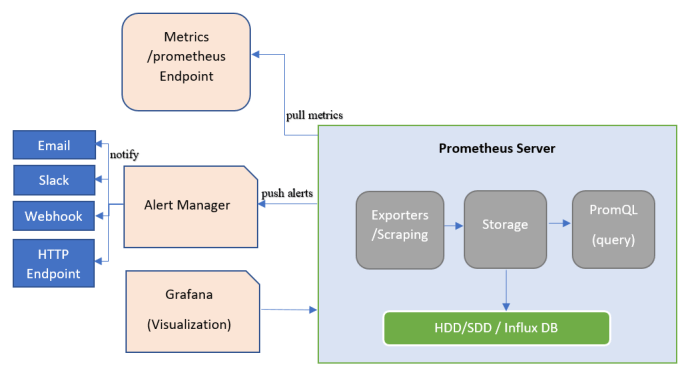
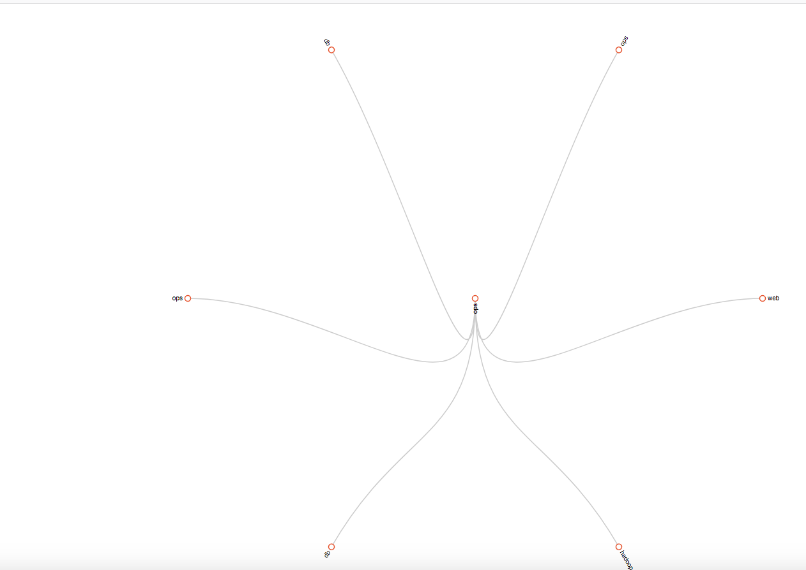
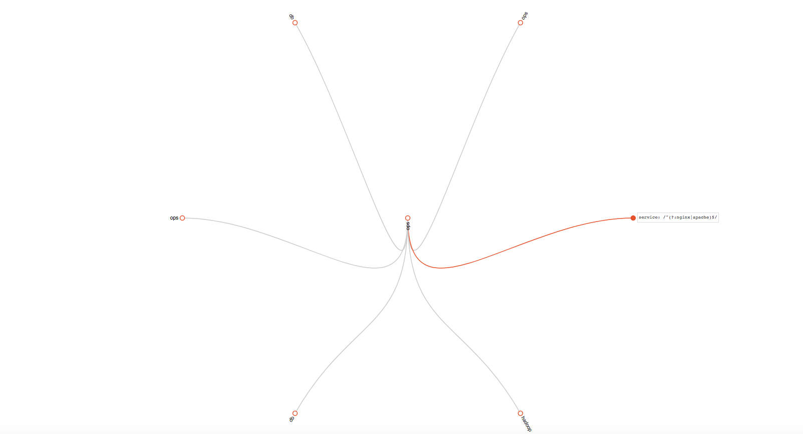
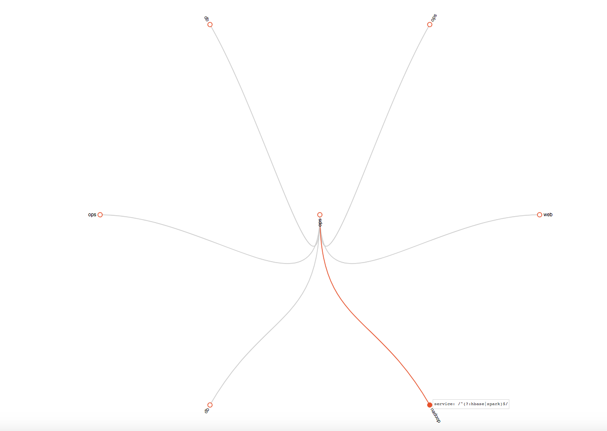

AlertManager
本章节主要涵盖了Alertmanager的工作机制与配置文件的比较详细的知识内容，由浅入深的给大家讲解。
警报一直是整个监控系统中的重要组成部分，Prometheus监控系统中，采集与警报是分离的。警报规则在 Prometheus 定义，警报规则触发以后，才会将信息转发到给独立的组件
Alertmanager ，经过 Alertmanager r对警报的信息处理后，最终通过接收器发送给指定用户，另外在 Alertmanager 中没有通知组的概念，只能自己对软件重新Coding，或者使用第三方插件来实现。
注意，这个通知组不是Alertmanager中的group概念，下面会详细讲 Group ，不要混淆哦。
前面已经介绍过一些关于 Alertmanager 知识点，本章开始针通过安装 Alertmanager 组件，对配置文件做详细说明，同时介绍 Prometheus 的警报规则的定义，最后使用Email、Wechat（Robot）、Dingtalk（webhook）来接受警报通知。
Alertmanager工作机制¶

在Prometheus生态架构里，警报是由独立的俩部分组成，可以通过上图很清晰的了解到 Prometheus 的警报工作机制。其中 Prometheus 与 Alertmanager 是分离的俩个组件。我们使用Prometheus Server端通过静态或者动态配置
去拉取 pull 部署在k8s或云主机上的各种类别的监控指标数据，然后基于我们前面讲到的 PromQL 对这些已经存储在本地存储 HDD/SSD 的 TSDB 中的指标定义阈值警报规则 Rules 。Prometheus会根据配置的参数周期性的对警报规则进行计算，
如果满足警报条件，生产一条警报信息，将其推送到 Alertmanager 组件，Alertmanager 收到警报信息之后，会对警告信息进行处理，进行 分组 Group 并将它们通过定义好的路由 Routing 规则转到 正确的接收器 receiver，
比如 Email Slack 钉钉、企业微信 Robot（webhook） 企业微信 等，最终异常事件 Warning、Error通知给定义好的接收人，其中如钉钉是基于第三方通知来实现的，对于通知人定义是在钉钉的第三方组件中配置。
在 Prometheus 中， 我们不仅仅可以对单条警报进行命名通过 PromQL定义规则，更多时候是对相关的多条警报进行分组后统一定义。这些定义会在后面说明与其管理方法。下面开始把 Alertmanager 中的分组 Grouping 、抑制 Inhibition、延迟 Silences
核心特性进行介绍，便于大家系统性的学习与理解。
AlertManager的三个概念¶
分组¶
Grouping 是 Alertmanager 把同类型的警报进行分组，合并多条警报到一个通知中。在生产环境中，特别是云环境下的业务之间密集耦合时，若出现多台 Instance 故障，可能会导致成千上百条警报触发。在这种情况下使用分组机制，
可以把这些被触发的警报合并为一个警报进行通知，从而避免瞬间突发性的接受大量警报通知，使得管理员无法对问题进行快速定位。
举个栗子，在Kubernetes集群中，运行着重量级规模的实例，即便是集群中持续很小一段时间的网络延迟或者延迟导致网络抖动，也会引发大量类似服务应用无法连接 DB 的故障。如果在警报规则中定义每一个应用实例都发送警报，那么到最后的结果就是
会有大量的警报信息发送给 Alertmanager 。
作为运维组或者相关业务组的开发人员，可能更关心的是在一个通知中就可以快速查看到哪些服务实例被本次故障影响了。为此，我们对服务所在集群或者服务警报名称的维度进行分组配置，把警报汇总成一条通知时，就不会受到警报信息的频繁发送影响了。
抑制¶
Inhibition 是 当某条警报已经发送，停止重复发送由此警报引发的其他异常或故障的警报机制。在生产环境中，IDC托管机柜中，若每一个机柜接入层仅仅是单台交换机，那么该机柜接入交换机故障会造成机柜中服务器非 up 状态警报。再有服务器上部署的应用服务不可访问也会触发警报。
这时候，可以通过在 Alertmanager 配置忽略由于交换机故障而造成的此机柜中的所有服务器及其应用不可达而产生的警报。
在我们的灾备体系中，当原有集群故障宕机业务彻底无法访问的时候，会把用户流量切换到备份集群中，这样为故障集群及其提供的各个微服务状态发送警报机会失去了意义，此时， Alertmanager 的抑制特性就可以在一定程度上避免管理员收到过多无用的警报通知。
静默¶
Silences 提供了一个简单的机制，根据标签快速对警报进行静默处理；对传进来的警报进行匹配检查，如果接受到警报符合静默的配置，Alertmanager 则不会发送警报通知。
以上除了分组、抑制是在 Alertmanager 配置文件中配置，静默是需要在 WEB UI 界面中设置临时屏蔽指定的警报通知。
以上的概念需要好好理解，这样才可以轻松的在监控系统设计的时候针对警报设计的一些场景自行调整。
安装Alertmanager¶
前面已经讲过了，我们可以使用 ansible 中自动化对 Alertmanager 进行安装、配置、启动、更新，这里仅仅只是用 Alertmanager 的二进制安装，以 systemd 管理启动。
## 创建相关目录
mkdir -p /data/alertmanager/{bin,conf,logs,data,templates}
## 下载二进制包，并
wget https://github.com/prometheus/alertmanager/releases/download/v0.21.0/alertmanager-0.21.0.linux-amd64.tar.gz
tar xvf alertmanager-0.21.0.linux-amd64.tar.gz
mv alertmanager-0.21.0.linux-amd64/{alertmanager,amtool} /data/alertmanager/bin/
mv alertmanager-0.21.0.linux-amd64/alertmanager.yml /data/alertmanager/conf/
# 目录结构
/data/alertmanager/
├── bin
│ ├── alertmanager
│ └── amtool
├── conf
│ └── alertmanager.yml
├── data
├── logs
└── templates
## 加入systemd启动脚本
cat <<EOF >/lib/systemd/system/alertmanager.service
[Unit]
Description=alertmanager
Documentation=https://prometheus.io/
After=network.target
StartLimitIntervalSec=0
[Service]
Type=simple
User=prometheus
ExecStart=/data/alertmanager/bin/alertmanager --storage.path="/data/alertmanager/data/" \
--config.file=/usr/local/alertmanager/alertmanager.yml \
--web.external-url=http://192.168.1.220 # 此处可以写域名，需要做proxy。
Restart=always
RestartSec=1
# Restart=on-failure
[Install]
WantedBy=multi-user.target
EOF
## 启动
systemctl enable alertmanager
systemctl start alertmanagerAlertmanager 参数
| 参数 | 描述 |
|---|---|
--config.file="alertmanager.yml" |
指定Alertmanager配置文件路径 |
--storage.path="data/" |
Alertmanager的数据存放目录 |
--data.retention=120h |
历史数据保留时间，默认为120h |
--alerts.gc-interval=30m |
警报gc之间的间隔 |
--web.external-url=WEB.EXTERNAL-URL |
外部可访问的Alertmanager的URL(例如Alertmanager是通过nginx反向代理) |
--web.route-prefix=WEB.ROUTE-PREFIX |
wen访问内部路由路径，默认是 --web.external-url |
--web.listen-address=":9093" |
监听端口，可以随意修改 |
--web.get-concurrency=0 |
并发处理的最大GET请求数，默认为0 |
--web.timeout=0 |
web请求超时时间 |
--cluster.listen-address="0.0.0.0:9094" |
集群的监听端口地址。设置为空字符串禁用HA模式 |
--cluster.advertise-address=CLUSTER.ADVERTISE-ADDRESS |
配置集群通知地址 |
--cluster.gossip-interval=200ms |
发送条消息之间的间隔，可以以增加带宽为代价更快地跨集群传播。 |
--cluster.peer-timeout=15s |
在同级之间等待发送通知的时间 |
| ... | ... |
--log.level=info |
自定义消息格式 [debug, info, warn, error] |
--log.format=logfmt |
日志消息的输出格式: [logfmt, json] |
--version |
显示版本号 |
Alertmanager配置详解¶
Alertmanager一个完整的配置文件范例：
## Alertmanager 配置文件
global:
resolve_timeout: 5m
# smtp配置
smtp_from: "prom-alert@example.com"
smtp_smarthost: 'email-smtp.us-west-2.amazonaws.com:465'
smtp_auth_username: "user"
smtp_auth_password: "pass"
smtp_require_tls: true
# email、企业微信的模板配置存放位置，钉钉的模板会单独讲如果配置。
templates:
- '/data/alertmanager/templates/*.tmpl'
# 路由分组
route:
receiver: ops
group_wait: 30s # 在组内等待所配置的时间，如果同组内，30秒内出现相同报警，在一个组内出现。
group_interval: 5m # 如果组内内容不变化，合并为一条警报信息，5m后发送。
repeat_interval: 24h # 发送报警间隔，如果指定时间内没有修复，则重新发送报警。
group_by: [alertname] # 报警分组
routes:
- match:
team: operations
group_by: [env,dc]
receiver: 'ops'
- match_re:
service: nginx|apache
receiver: 'web'
- match_re:
service: hbase|spark
receiver: 'hadoop'
- match_re:
service: mysql|mongodb
receiver: 'db'
# 接收器
# 抑制测试配置
- receiver: ops
group_wait: 10s
match:
status: 'High'
# ops
- receiver: ops # 路由和标签，根据match来指定发送目标，如果 rule的lable 包含 alertname， 使用 ops 来发送
group_wait: 10s
match:
team: operations
# web
- receiver: db # 路由和标签，根据match来指定发送目标，如果 rule的lable 包含 alertname， 使用 db 来发送
group_wait: 10s
match:
team: db
# 接收器指定发送人以及发送渠道
receivers:
# ops分组的定义
- name: ops
email_configs:
- to: '9935226@qq.com,10000@qq.com'
send_resolved: true
headers:
subject: "[operations] 报警邮件"
from: "警报中心"
to: "小煜狼皇"
# 钉钉配置
webhook_configs:
- url: http://localhost:8070/dingtalk/ops/send
# 企业微信配置
wechat_configs:
- corp_id: 'ww5421dksajhdasjkhj'
api_url: 'https://qyapi.weixin.qq.com/cgi-bin/'
send_resolved: true
to_party: '2'
agent_id: '1000002'
api_secret: 'Tm1kkEE3RGqVhv5hO-khdakjsdkjsahjkdksahjkdsahkj'
# web
- name: web
email_configs:
- to: '9935226@qq.com'
send_resolved: true
headers: { Subject: "[web] 报警邮件"} # 接收邮件的标题
webhook_configs:
- url: http://localhost:8070/dingtalk/web/send
- url: http://localhost:8070/dingtalk/ops/send
# db
- name: db
email_configs:
- to: '9935226@qq.com'
send_resolved: true
headers: { Subject: "[db] 报警邮件"} # 接收邮件的标题
webhook_configs:
- url: http://localhost:8070/dingtalk/db/send
- url: http://localhost:8070/dingtalk/ops/send
# hadoop
- name: hadoop
email_configs:
- to: '9935226@qq.com'
send_resolved: true
headers: { Subject: "[hadoop] 报警邮件"} # 接收邮件的标题
webhook_configs:
- url: http://localhost:8070/dingtalk/hadoop/send
- url: http://localhost:8070/dingtalk/ops/send
# 抑制器配置
inhibit_rules: # 抑制规则
- source_match: # 源标签警报触发时抑制含有目标标签的警报，在当前警报匹配 status: 'High'
status: 'High' # 此处的抑制匹配一定在最上面的route中配置不然，会提示找不key。
target_match:
status: 'Warning' # 目标标签值正则匹配，可以是正则表达式如: ".*MySQL.*"
equal: ['alertname','operations', 'instance'] # 确保这个配置下的标签内容相同才会抑制，也就是说警报中必须有这三个标签值才会被抑制。global¶
即为全局设置，在 Alertmanager 配置文件中，只要全局设置配置了的选项，全部为公共设置，可以让其他设置继承，作为默认值，可以子参数中覆盖其设置。其中 resolve_timeout 用于设置处理超时时间，也是生命警报状态为解决的时间，
这个时间会直接影响到警报恢复的通知时间，需要自行结合实际生产场景来设置主机的恢复时间，默认是5分钟。在全局设置中可以设置smtp服务，同时也支持slack、victorops、pagerduty等，在这里只讲我们常用的Email，钉钉，企业微信，
同时也可以自己使用go语言开发的gubot进行二次开发，对接自定义webhook通知源。
template¶
警报模板可以自定义通知的信息格式，以及其包含的对应警报指标数据，可以自定义Email、企业微信的模板，配置指定的存放位置，对于钉钉的模板会单独讲如何配置，这里的模板是指的发送的通知源信息格式模板，比如Email，企业微信。
route¶
警报路由模块描述了在收到 Prometheus 生成的警报后，将警报信息发送给接收器 receiver 指定的目标地址规则。 Alertmanager 对传入的警报信息进行处理，根据所定义的规则与配置进行匹配。对于路由可以理解为树状结构，
设置的第一个route是跟节点，往下的就是包含的子节点，每个警报传进来以后，会从配置的跟节点路由进入路由树，按照深度优先从左向右遍历匹配，当匹配的节点后停止，进行警报处理。
参数描述
| 参数 | 描述 |
|---|---|
receiver: <string> |
发送警报的接收器名称 |
group_by: ['label_name1,...'] |
根据 prometheus 的 lables 进行报警分组，这些警报会合并为一个通知发送给接收器，也就是警报分组。 |
match: [ <label_name>: <labelvalue>,...] |
通过此设置来判断当前警报中是否有标签的labelname，等同于labelvalue。 |
match_re: [<label_name>: <regex>,...] |
通过正则表达式进行警报配置 |
group_wait: [<duration>]|default=30s |
设置从接受警报到发送的等待时间，若在等待时间中group接收到新的警报信息，这些警报会合并为一条发送。 |
group_interval: [<duration>]|default=5m |
此设置控制的是 group 之间发送警报通知的间隔时间。 |
repeat_interval: [<duration>]|default=4h |
此设置控制的是警报发送成功以后，没有对警报做解决操作的话，状态 Firing 没有变成 Inactive 或者 Pending ，会再次发送警报的的间隔时间。 |
routes: - <route>... |
子路由的匹配设置 |
路由匹配规则:
例子：
route:
receiver: admin # 默认的接收器名称
group_wait: 30s # 在组内等待所配置的时间，如果同组内，30秒内出现相同报警，在一个组内出现。
group_interval: 5m # 如果组内内容不变化，5m后发送。
repeat_interval: 24h # 发送报警间隔，如果指定时间内没有修复，则重新发送报警
group_by: [alertname,cluster] # 报警分组，根据 prometheus 的 lables 进行报警分组，这些警报会合并为一个通知发送给接收器，也就是警报分组。
routes:
- match:
team: ops
group_by: [env,dc]
receiver: 'ops'
- match_re:
service: nginx|apache
receiver: 'web'
- match_re:
service: mysql|mongodb
receiver: 'db'
- match_re:
service: hbase|spark
receiver: 'hadoop'在以上的例子中，默认的警报组全部发送给 admin ，且根据路由按照 alertname cluster 进行警报分组。在子路由中的若匹配警报中的标签 team 的值为 ops，Alertmanager 会按照标签 env dc 进行警报分组然后发送给接收器 receiver ops配置的警报通知源。
继续匹配的操作是对 service 标签进行匹配，并且配到了 nginx redis mongodb 的值，就会向接收器 receiver web配置的警报通知源发送警报信息。
对这种匹配验证操作灰常考究个人的逻辑思维能力，这不是人干的事情呀~因此，Prometheus发布了一个 Routing tree editor，
用于检测Alertmanager的配置文件结构配置信息，然后调试。使用方法很简单，就是把 alertmanager.yml 的配置信心复制到这个站点，然后点击 Draw Routing Tree 按钮生成路由结构树，
然后在 Match Label Set 前面输入以 {<label name> = "<value>"} 格式的警报标签，然后点击 Match Label Set 按钮会显示发送状态图。
以下是通过routing tree editor生成的树结构图.

然后我们可以使用 {service="nginx"} 和 {service="spark"} 表达式来做匹配的规则用于验证其发送通知源是否为 receiver 中db的发送配置。


receiver¶
接受器是一个统称，每个 receiver 都有需要设置一个全局唯一的名称，并且对应一个或者多个通知方式，包括email、微信、Slack、钉钉等。
官方现在满足的配置是：
name: <string>
email_config:
[ - <config> ]
hipchat_configs: #此模块配置已经被移除了
[ <config> ]
pagerduty_configs:
[ <config> ]
pushover_configs:
[ <config> ]
slack_configs:
[ <config> ]
opsgenie_configs:
[ <config> ]
webhook_configs:
[ <config> ]
victorops_configs:
[ <config> ]
webchat_configs:
[ <config> ]可以看到Alertmanager提供了很多种接收器的通知配置，我们可以使用webhook接收器来定义通知集成，支持用户自己定义编写。
inhibit_rules¶
inhibit_rules 模块中设置警报抑制功能，可以指定在特定条件下需要忽略的警报条件。可以使用此选项设置首选，比如优先处理某些警报，如果同一组中的警报同时发生，则忽略其他警报。
合理使用 inhibit_rules ，可以减少频发发送没有意义的警报的产生。
inhibit_rules 配置信息：
trget_match:
[ <label_name>: <labelvalue>,... ]
trget_match_re:
[ <label_name>: <labelvalue>,... ]
source_match:
[ <label_name>: <labelvalue>,... ]
source_match_re:
[ <label_name>: <labelvalue>,... ]
[ equal: '[' <lable_name>, ...]'] 范例：
inhibit_rules: # 抑制规则
- source_match: # 源标签警报触发时抑制含有目标标签的警报，在当前警报匹配 status: 'High'
status: 'High' # 此处的抑制匹配一定在最上面的route中配置不然，会提示找不key。
target_match:
status: 'Warning' # 目标标签值正则匹配，可以是正则表达式如: ".*MySQL.*"
equal: ['alertname','operations', 'instance'] # 确保这个配置下的标签内容相同才会抑制，也就是说警报中必须有这三个标签值才会被抑制。 以上示例是指 如果匹配 equal 中的抑制的标签值，触发了包含 equal 中的标签值的 status: 'High' 警报 ，则不发送含包含 equal 中的标签值的 status: 'Warning' 标签的警报。
这里尽量避免 source_match 与 target_match 之间的重叠，否则很难做到理解与维护，同时建议谨慎使用此功能。使用基于症状的警报时，警报之间很少需要相互依赖。
到此，本章节就讲完了，下一节我们讲一讲 警报规则（rules） ，谢谢。